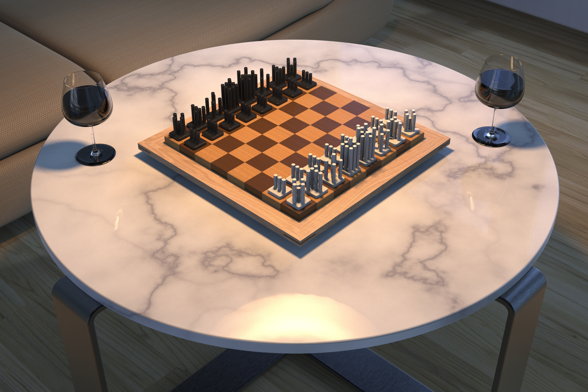
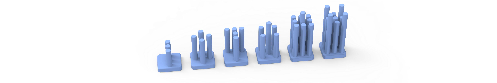
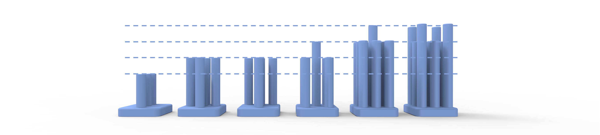
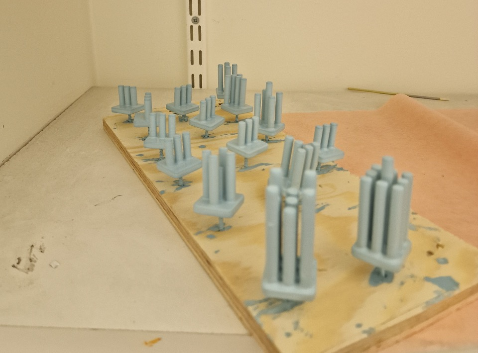
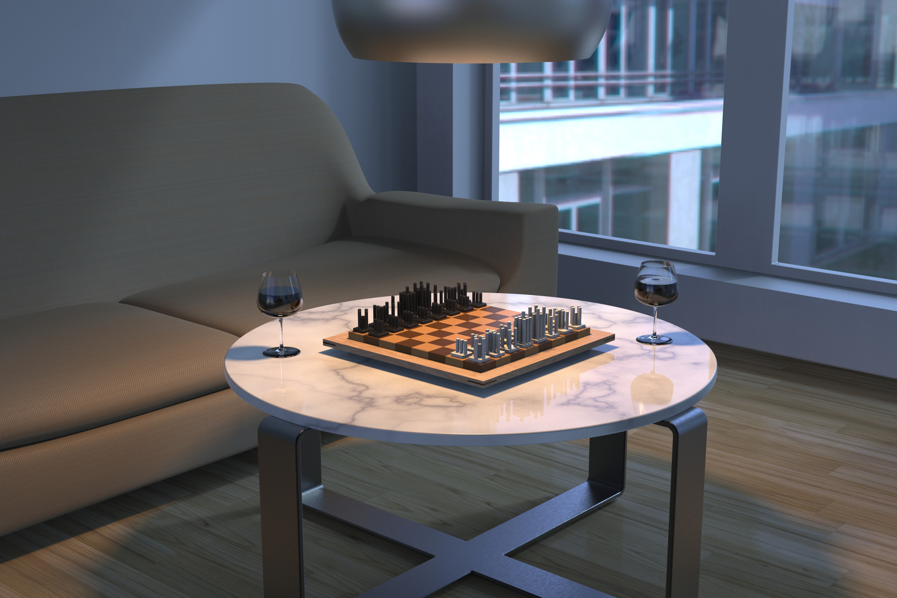

Form study · 2 weeks · 2023
← Back to selected workChess pieces.
A compact exploration of how movement can become a visible form language.
One shared structure, six different behaviors.

The idea
Make the rules visible.
The brief was to create a unique chess set that still communicates the traditional rules. Our group used vertical rods as a shared base, then changed height, count and direction to show how each piece moves.
- Project
- Product development form study
- Team
- Four people
- Focus
- Concept, 3D printing and visualization
- Tools
- Autodesk Alias and KeyShot
01 / Design and the idea
Hierarchy built from movement.
The first direction made the pieces feel related, but the hierarchy needed to be clearer. Height changes, a crown-like rook and a sharper bishop tip helped the set read faster.


02 / 3D print and painting prototype
A quick test of scale and touch.
3D printing made the shared base and height variations easy to test. Painting exposed the tight gaps between rods, so each piece was held by a screw while it was dipped.

03 / Visualized
A familiar game in a new shape.
The final renders show how the pieces work together as a set and how their material, light and proportion change the atmosphere of the board.

Takeaway
A small form study about making hidden rules easier to see.